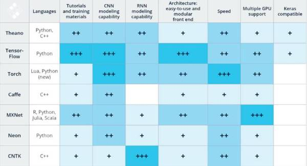
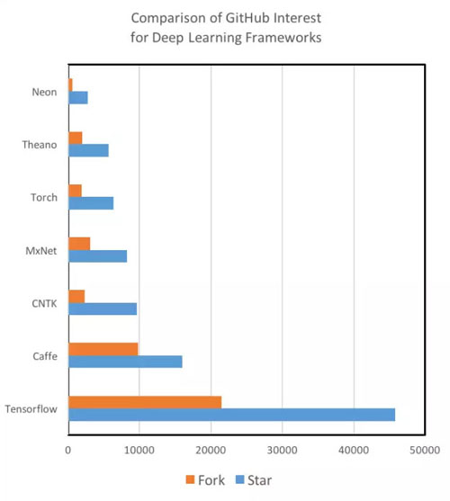
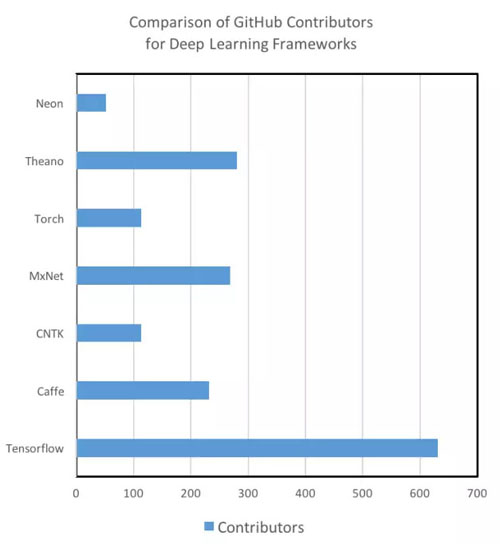
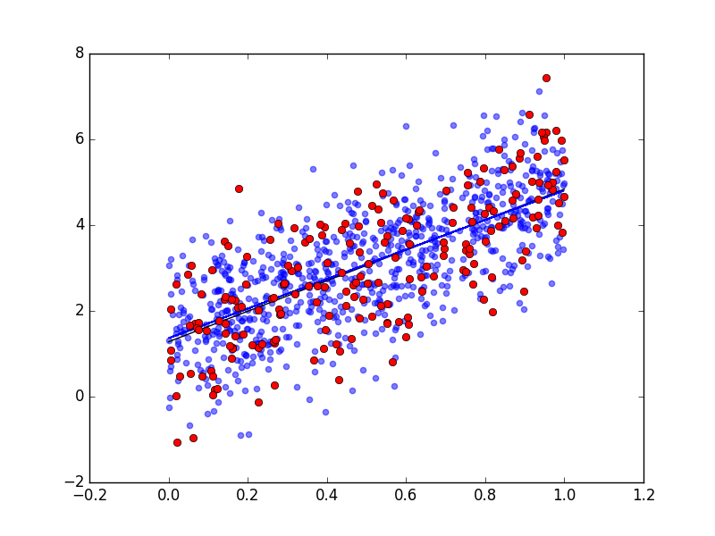

Tensorflow introduction 1
jiancheng.zhai
Created: 2017-03-31 Fri 17:05
Introduction
Comparison

Comparison

Comparison

Install
pip - conf
# >=OSX 10.11
# >=CUDA 8.0
# ~/.pip/pip.conf
[global]
index-url = http://pypi.douban.com/simple
trusted-host = pypi.douban.com
disable-pip-version-check = true
timeout = 120
pip - install
# more details
# https://www.tensorflow.org/versions/r0.11/get_started/os_setup#pip-installation
# http://blog.csdn.net/gs_008/article/details/52833741
# python 3.5 with GPU support
export TF_BINARY_URL=https://storage.googleapis.com/tensorflow/mac/gpu/tensorflow-0.11.0-py3-none-any.whl
Addition
- docker
- compile
- CUDA & cuDNN support
Framework basis
computational graph
- build graph
- run graph
tensor
3 # a rank 0 tensor; this is a scalar with shape []
[1. ,2., 3.] # a rank 1 tensor; this is a vector with shape [3]
[[1., 2., 3.], [4., 5., 6.]] # a rank 2 tensor; a matrix with shape [2, 3]
[[[1., 2., 3.]], [[7., 8., 9.]]] # a rank 3 tensor with shape [2, 1, 3]
Example:
\begin{pmatrix}
a & b \\
c & d
\end{pmatrix}
# if defined a, b, c, d
m = [[a, b], [c, d]]
tf.constant
# tf.float16
# tf.float32
# tf.float64
node1 = tf.constant(3.0, tf.float32)
node2 = tf.constant(4.0) # tf.float32 implicitly
print(node1, node2)
# output:
# Tensor("Const:0", shape=(), dtype=float32) Tensor("Const_1:0", shape=(), dtype=float32)
print(type(node1))
# output:
# tensorflow.python.framework.ops.Tensor
tf.placeholder
tf.placeholder is used to feed actual training examples.
a = tf.placeholder(tf.float32)
b = tf.placeholder(tf.float32)
adder_node = a + b # + provides a shortcut for tf.add(a, b)
print(adder_node)
# output:
# dtype=float32>
print(type(adder_node))
# output:
# tensorflow.python.framework.ops.Tensor
tf.Variable
W = tf.Variable([.3], tf.float32)
b = tf.Variable([-.3], tf.float32)
x = tf.placeholder(tf.float32)
linear_model = W * x + b
print(type(W))
# output:
# tensorflow.python.ops.variables.Variable
# Variable as representing your model's trainable parameters
# ------------------------------------------------------------------
# Tensor as representing the data being fed into your model \
# and the intermediate representations of that data as it \
# passes through your model.
tf.Session
# suppose we have defined
# W = tf.Variable([.3], tf.float32)
# sess = tf.InteractiveSession()
sess = tf.Session()
#init = tf.global_variables_initializer()
init = tf.initialize_all_variables()
sess.run(init)
sess.run(W)
W.eval(session=sess)
# output:
# array([ 0.30000001], dtype=float32)
calculation
- tf.assign
# W must be tf.Variable
fixW = tf.assign(W, [-1.])
# output:
#
- tf.add
node3 = tf.add(node1, node2)
print("sess.run(node3): ",sess.run(node3))
# output:
# sess.run(node3): 7.0
print(type(sess.run(node3))
# output:
# numpy.float32
calculation
- tf.matmul
matrix1 = tf.constant([[3., 3.]])
matrix2 = tf.constant([[2.],[2.]])
product = tf.matmul(matrix1, matrix2)
sess.run(product)
# output:
# array([[ 12.]], dtype=float32)
product = matrix1 * matrix2
s.run(product)
# output:
# array([[ 6., 6.],
# [ 6., 6.]], dtype=float32)
calculation
- reduce_sum
# 'x' is [[1, 1, 1]
# [1, 1, 1]]
tf.reduce_sum(x) ==> 6
tf.reduce_sum(x, 0) ==> [2, 2, 2]
tf.reduce_sum(x, 1) ==> [3, 3]
- reduce_mean
# 'x' is [[1., 1.]
# [2., 2.]]
tf.reduce_mean(x) ==> 1.5
tf.reduce_mean(x, 0) ==> [1.5, 1.5]
tf.reduce_mean(x, 1) ==> [1., 2.]
optimizer
- tf.train.GradientDescentOptimizer
- tf.train.AdadeltaOptimizer
- tf.train.AdagradOptimizer
- tf.train.AdagradDAOptimizer
- tf.train.MomentumOptimizer
- tf.train.AdamOptimizer
- tf.train.FtrlOptimizer
- tf.train.RMSPropOptimizer
- Comparison
Demo
Linear Regression - import & setting
import tensorflow as tf
import numpy as np
import matplotlib.pyplot as plt
from sklearn.model_selection import train_test_split
rng = np.random
# Parameters
learning_rate = 0.01
training_epochs = 1000
display_step = 50
batch_size = 50
Linear Regression - data
# make training data
def create_toy_data(func, low=0, high=1., n=1000, std=1.):
# sample points
x = np.random.uniform(low, high, n)
t = func(x) + np.random.normal(scale=std, size=n)
return train_test_split(x, t, test_size=0.33, random_state=42)
def func(x):
return 3.56 * x + 1.28
train_X, test_X, train_Y, test_Y = create_toy_data(func)
n_samples = train_X.shape[0]
Linear Regression - data preview

Linear Regression - model
# tf Graph Input
X = tf.placeholder("float")
Y = tf.placeholder("float")
# Set model weights : init to random values
W = tf.Variable(rng.randn(), name="weight")
b = tf.Variable(rng.randn(), name="bias")
# Construct a linear model
pred = tf.add(tf.mul(X, W), b)
# Mean squared error
cost_func = tf.reduce_sum(tf.pow(pred - Y, 2))/(2*n_samples)
# optimizer
optimizer = tf.train.GradientDescentOptimizer(learning_rate)
.minimize(cost_func)
Linear Regression - train
init = tf.initialize_all_variables()
sess = tf.Session()
sess.run(init)
for epoch in range(training_epochs):
avg_cost = 0.
total_batch = int(n_samples/batch_size)
for i in range(total_batch):
begin_idx = batch_size * i
batch_xs = train_X[begin_idx:begin_idx+batch_size, ]
batch_ys = train_Y[begin_idx:begin_idx+batch_size, ]
_, batch_cost = sess.run([optimizer, cost_func],
feed_dict={X:batch_xs, Y:batch_ys})
avg_cost += batch_cost / total_batch
Linear Regression - result

linear Regression - validate
# using test set to validate
testing_cost = sess.run(cost_func,
feed_dict={X:test_X, Y:test_Y})
print("Testing cost={}".format(testing_cost))
print("Absolute mean square loss difference:{}"
.format(abs(training_cost-testing_cost)))